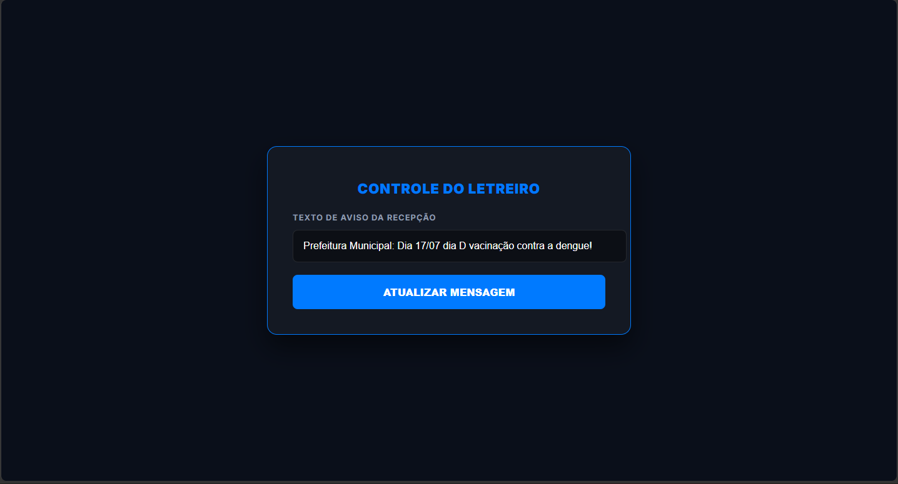

Chamada por voz
Chame pacientes automaticamente com anúncios de voz claros e profissionais.
PrimeLogic apresenta
Transforme sua sala de espera em uma experiência organizada, moderna e profissional para seus pacientes.
Modernizar minha clínicaA experiência do paciente começa antes do atendimento. O NextInLine ajuda sua clínica a transmitir organização, profissionalismo e cuidado.
Chamadas claras, organização e uma apresentação profissional para sua clínica.
Tecnologia simples criada para melhorar a experiência dos pacientes.
Chame pacientes automaticamente com anúncios de voz claros e profissionais.
Exiba mensagens personalizadas diretamente na tela da sala de espera.
Enquanto não existem chamadas ativas, sua clínica continua apresentando conteúdos.
Uma experiência visual elegante que transmite organização.
Realize chamadas em poucos cliques através do sistema.
Uma interface criada para profissionais que precisam de agilidade no dia a dia.

Configure seus ambientes e profissionais rapidamente.
Realize chamadas diretamente pelo sistema.
Seus pacientes recebem uma jornada mais organizada.
Ofereça aos seus pacientes uma experiência mais organizada, moderna e profissional.
Conhecer o NextInLine